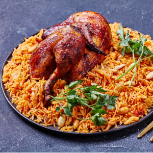

Blog 1
Saudi Arabia National Food:- Kabsa
The national dish of Saudi Arabia is Kabsa is top in blog because of its unique way of making it

Some of the best part of Kabsa is:
- Cinnamon, cardamom, cloves, and bay leaves are just a few of the spices that contribute to the warm of dish
- Served in big plate where a group of people eat it
- It can be commonly paired with chicken, lamb or fish
- Commonly in India it is called Mandi
- Aromatic spices are used
- Sweetness and depth of dish can be done by tomatoes and onions
This is video I took when I had taste it for first time and it is worth eating, mouthful of water and must try dish for non vegetarian guys
Blog 2
Indian origin:Tandoori chicken
The Tandoori chicken is originated from country known for its spices which is India

Some best part of Tandoori chicken is:
- Roasted and marinated with Indian Spices which makes it red color
- Cooked traditionally in tandoor which has cylindrical clay oven with high temperatures which results in smoky flavours
- Chicken is seasoned with various spices of India and has its own tandoor masala
- It can be enjoyed as apetizer or main course
- It is generally accompanied with naan, roti
- If it is leftover then it can be used in sandwiches,wraps etc
One of the famous dish of India which has golden mark in history of Indian cuisine and in world
Blog 3
The loved dish across the globe Spaghetti
The Spaghetti is famous italian dish which is widely known and is served in world in every chain of restaurant

Some of the best part in Spaghetti is:
- The flavours and aroma makes spaghetti special
- We can add lasagna, meatballs which blends with it perfectly
- It is also nutritious as it is made from flour of grains with mixed with egg or water
- It is mixed with tomato sauce, other vegetables which makes it perfect for healthy plate meal
Perhaps it is one of the most loved dish across the globe due to its spices and it blend.
Blog 4
Simple and fond of Indian Subcontinent and Nepal Dal Bhat
The Dal Bhat is also originated in India as well as Nepal as different types of addons or recepies are different

Some of best part of Dal Bhat is:
- It has rich source of proteins and essential carbohydrates
- It consist of lentil soup(dal), rice, curry, pickles which makes it complete dish
- It is served in round plate with small bowls of each component
- Over the time it became symbol of hospitality and community
The most healthy, tasty and satisfying food is sensation cuisine of nepal is famous with different names across the world